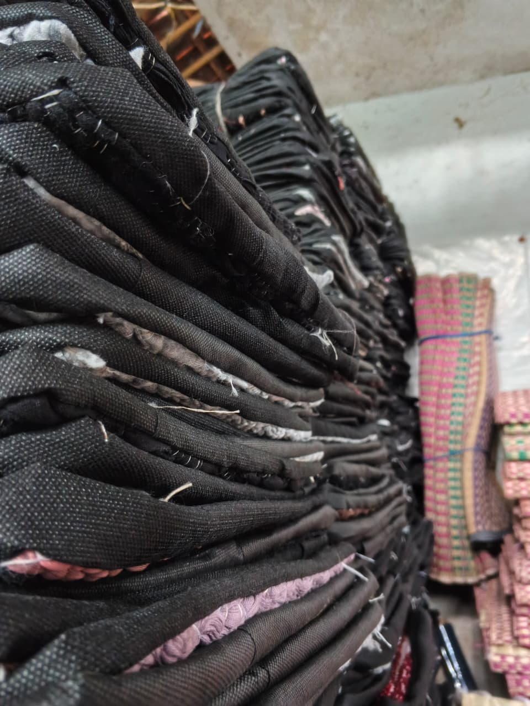
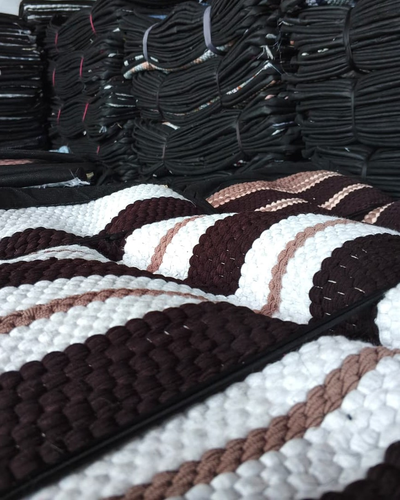
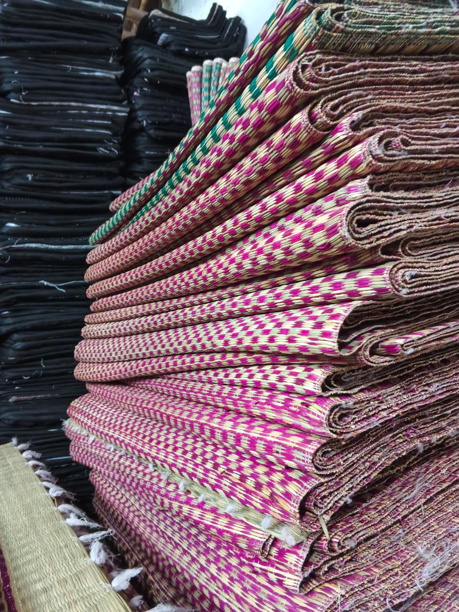
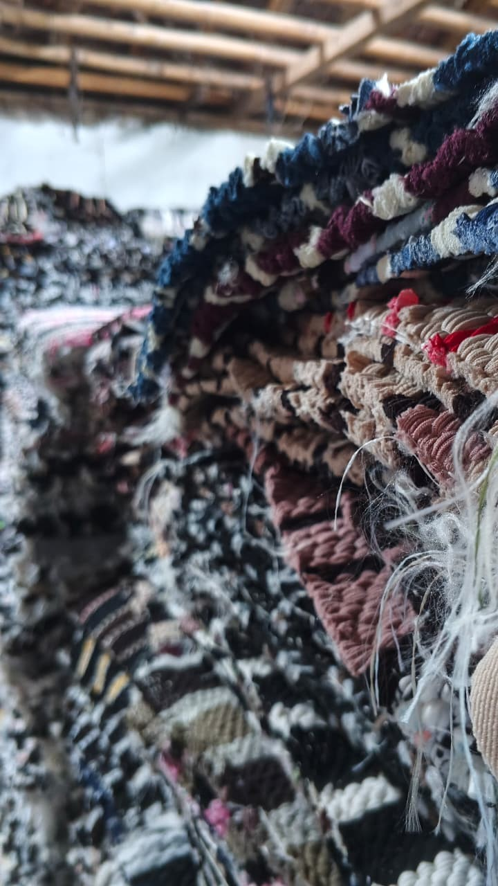

Keset Kelin Rp 9.000Keset Kelin
Rp 9.000 / pcs
Keset kelin berukuran 40 cm × 60 cm. Berdaya serap baik, tidak licin, serta menghadirkan sentuhan hangat untuk area teras dan pintu rumah.
Keset dan tikar anyaman buatan pengrajin lokal. Sederhana, fungsional, dan dibuat untuk menemani keseharian.
Dikerjakan dengan teliti
oleh pengrajin lokal

Karya pilihan
01 — Tentang Ismi Tikar
Ismi Tikar merupakan usaha pengrajin keset dan tikar khas Tasikmalaya. Kami menghadirkan produk anyaman yang berguna untuk kebutuhan rumah, dengan pilihan motif dan warna yang beragam.
Butuh untuk rumah sendiri, toko, atau dijual kembali? Kami menerima pesanan dalam jumlah kecil maupun partai besar. Hubungi kami untuk mendiskusikan kebutuhan dan ketersediaan produk.
Lokal
Dari pengrajin Tasikmalaya
Fleksibel
Eceran hingga partai besar
02 — Produk kami
Setiap kebutuhan punya pilihan. Jelajahi koleksi anyaman berkualitas buatan pengrajin lokal dengan bahan yang nyaman dan tahan lama.

Keset Kelin Rp 9.000Rp 9.000 / pcs
Keset kelin berukuran 40 cm × 60 cm. Berdaya serap baik, tidak licin, serta menghadirkan sentuhan hangat untuk area teras dan pintu rumah.

Tikar Rp 75.000Rp 75.000 / pcs
Tikar anyaman tradisional khas Tasikmalaya dengan jalinan yang rapat dan kokoh. Ringan, mudah digulung, serta nyaman digunakan untuk acara kumpul keluarga atau bersantai di rumah.

Keset Rawis Rp 9.000Rp 9.000 / pcs
Keset berukuran 40 cm × 60 cm dengan aksen rumbai/rawis yang estetik. Kombinasi motif warna yang beragam, efektif menyerap air dan membersihkan alas kaki.
*Harga eceran. Untuk pembelian grosir/partai besar, ukuran kustom, dan ketersediaan motif, silakan hubungi kami via WhatsApp.
03 — Pemesanan
Ceritakan produk yang kamu cari dan jumlah yang dibutuhkan. Konsultasikan pesananmu langsung via WhatsApp dengan tim Ismi Tikar.
Pesanan eceran & partai besar
Tanya harga dan ketersediaan secara langsung.
Siap memesan atau ingin tanya-tanya dulu seputar motif, ukuran, dan harga khusus partai besar? Hubungi kami langsung melalui WhatsApp atau layanan pelanggan kami.
WhatsApp Fast Response
+62 857-5929-4551
04 — Alamat kami
Kami berada di kawasan Sukajaya, Kecamatan Purbaratu, Kota Tasikmalaya. Hubungi kami sebelum berkunjung untuk memastikan waktu dan ketersediaan produk.
Alamat
Pasirjaya RT 03 RW 06,
Kelurahan Sukajaya, Kecamatan
Purbaratu,
Kota Tasikmalaya, Jawa Barat.